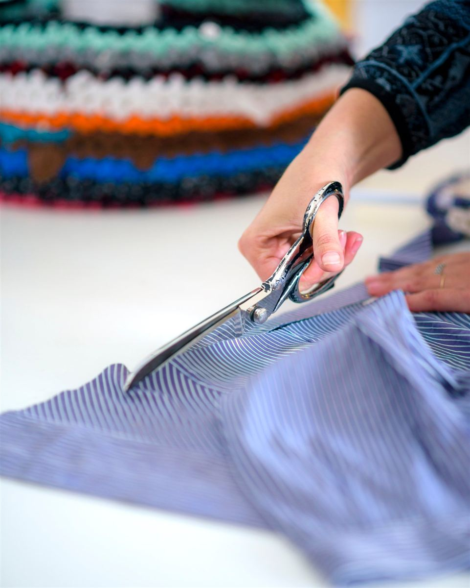
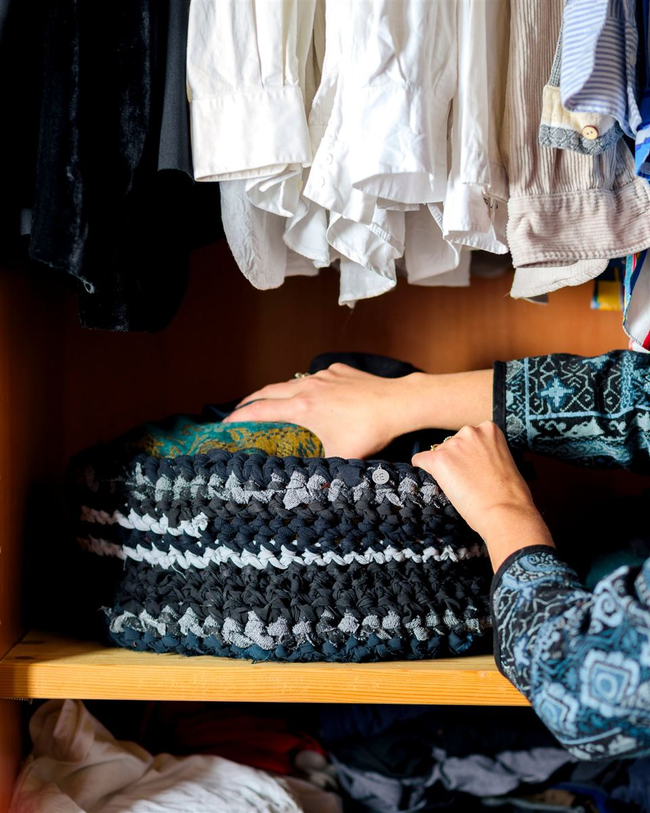

In breve. In Italia dal 1° gennaio 2022 i vestiti e i tessuti vecchi non vanno nell'indifferenziato: la raccolta differenziata dei tessili è obbligatoria. In pratica si portano nei contenitori stradali per abiti usati o al centro di raccolta del Comune, puliti e chiusi in un sacchetto. Non esiste una mappa unica per tutta Italia: per trovare il punto più vicino a te cerca «raccolta indumenti» con il nome del tuo Comune, o usa l'app della raccolta differenziata del tuo Comune. I capi rotti, sporchi o ammuffiti spesso nei cassonetti non vanno più. E prima del cassonetto c'è quasi sempre una strada migliore: ripararli, passarli a qualcuno o trasformarli in qualcos'altro.

I vestiti vecchi vanno nel secco?
No. Il decreto legislativo 116 del 2020 ha reso obbligatoria la raccolta differenziata dei rifiuti tessili dal 1° gennaio 2022, tre anni prima di quanto chiedeva l'Unione europea. Da allora magliette, pantaloni, lenzuola e asciugamani non dovrebbero più finire nel bidone del secco residuo.
Nella realtà le cose sono meno ordinate. Molti Comuni sono partiti tardi, e ancora oggi le indicazioni cambiano da una città all'altra. Per questo la risposta giusta comincia sempre allo stesso modo: guarda il calendario della raccolta o il sito del tuo Comune, o chiedi al gestore dei rifiuti.
Dove si portano, in pratica
- I contenitori stradali per abiti usati. Sono i cassonetti, spesso gialli o bianchi, gestiti dal Comune o da cooperative sociali. Ci vanno abiti, scarpe, borse, biancheria per la casa.
- Il centro di raccolta comunale (l'isola ecologica). Accetta i tessili anche quando i cassonetti stradali sono pieni, per esempio al cambio di stagione.
- Le associazioni e le parrocchie, se i vestiti sono in buono stato e qualcuno li può usare subito.
- Alcuni negozi di abbigliamento ritirano i capi usati, a volte in cambio di un buono sconto.
Qualche regola che vale quasi ovunque:
- metti i vestiti in un sacchetto chiuso, puliti e asciutti: un capo bagnato fa ammuffire tutto il sacco;
- le scarpe legate a coppie, altrimenti si separano e non servono più a nessuno.
Come trovo il cassonetto dei vestiti più vicino a me?
Non c'è una mappa nazionale, perché la raccolta la organizza ogni Comune, spesso con cooperative e aziende diverse. E i contenitori cambiano: a Palermo quelli stradali sono stati tolti e oggi gli abiti si portano nei centri comunali di raccolta; a Napoli diverse aziende hanno ritirato i loro cassonetti. Un elenco di indirizzi sarebbe vecchio dopo pochi mesi. Questi quattro modi invece funzionano in qualsiasi città:
- Cerca su Google «raccolta indumenti» e il nome del tuo Comune. Tra i primi risultati c'è quasi sempre la pagina del Comune o dell'azienda che raccoglie i rifiuti, con i punti di raccolta e le regole.
- Usa l'app della raccolta differenziata del tuo Comune. Molti Comuni usano Junker, gratuita: scrivi «maglietta» o «scarpe» e ti dice dove vanno dove abiti, e spesso anche indirizzo e orari del centro di raccolta.
- Guarda il calendario della raccolta che arriva a casa, o chiama il numero verde dell'azienda dei rifiuti: è scritto lì.
- Se non trovi niente, il centro comunale di raccolta (l'isola ecologica) è il posto più sicuro: è lì che molti Comuni stanno spostando i contenitori.
E i vestiti rotti, sporchi o ammuffiti?
Qui le regole stanno cambiando. Con l'obbligo del 2022 molti Comuni hanno indicato i cassonetti per tutti i tessili, anche quelli rotti. Le quantità sono diventate ingestibili e molte aziende della raccolta hanno smesso di accettarli: un capo che non si può rivendere, per loro, è solo un costo.
- Rotti ma puliti e asciutti: controlla cosa dice il tuo Comune; spesso vanno portati al centro di raccolta.
- Sporchi in modo irrimediabile o ammuffiti: di solito vanno nell'indifferenziato, a meno che il tuo Comune non indichi altro. Nel cassonetto degli abiti rovinano anche gli altri vestiti del sacco.
Prima, però, guardalo bene: un buco, uno strappo o una cucitura aperta si chiudono con ago e filo. E un capo macchiato può ancora diventare stoffa per qualcos'altro.
Cosa succede dopo il cassonetto
Questa è la parte che mi ha fatto cambiare il modo di guardare i vestiti.
L'Agenzia europea dell'ambiente ha stimato che nel 2020 ogni persona nell'Unione europea ha prodotto circa 16 chili di rifiuti tessili. Di questi, solo 4,4 chili sono stati raccolti a parte per essere riusati o riciclati. Gli altri 11,6 chili sono finiti nei rifiuti misti.
In Italia, secondo l'Ispra, ogni anno si producono circa 905mila tonnellate di rifiuti tessili, e circa 725mila finiscono ancora nell'indifferenziato.
E anche quello che viene raccolto non torna quasi mai a essere un vestito. I capi migliori vengono selezionati e rivenduti come usato, spesso fuori dall'Europa; una parte diventa stracci industriali o imbottitura; una parte non trova uso. Che finiscano a chi ne ha bisogno è in gran parte un mito: anche chi li distribuisce, come la Caritas, lo fa solo con una piccola parte di quello che raccoglie. Trasformare un tessuto vecchio in filo nuovo è ancora difficile e costoso, soprattutto quando le fibre sono mescolate.
Il cassonetto, insomma, è meglio del secco. Ma non è la fine della storia che immaginiamo.
Cosa sta cambiando
- La direttiva europea 2025/1892 chiede che chi produce e vende vestiti paghi per la loro raccolta e il loro riciclo, la cosiddetta «responsabilità estesa del produttore». Gli Stati devono recepirla entro giugno 2027.
- In Italia il decreto su questo sistema ha avuto il parere favorevole della Conferenza Unificata il 23 luglio 2026, ma a fine ottobre non era ancora pubblicato in Gazzetta Ufficiale. Tra le proposte discusse c'è il ritiro gratuito dei vestiti usati nei negozi più grandi.
Per chi butta un maglione, oggi, non cambia ancora niente. Ma è il segnale che il problema è diventato troppo grande per ignorarlo.
Prima di buttarlo: cinque domande
Io me le faccio davanti all'armadio, una dopo l'altra. Di solito un capo si ferma prima della quinta.
- Si può riparare? Una cucitura aperta, un bottone, un orlo scucito: sono dieci minuti con ago e filo. Un buco o uno strappo si chiudono, e a volte diventano la parte più bella del capo.
- Lo mette qualcun altro? Un'amica, una sorella, uno scambio di vestiti, un mercatino. È la strada che conserva più valore.
- Si può modificare? Accorciare, stringere, togliere le maniche, tingere. Un vestito che non ci piace più spesso è solo un vestito da finire.
- Il tessuto è ancora buono? Allora può diventare un'altra cosa. Vedi sotto.
- È proprio consumato? Allora diventa straccio per la casa o imbottitura. E solo dopo, il cassonetto giusto.
Cosa si può fare, tessuto per tessuto
- Magliette di cotone. Tagliate a spirale diventano fettuccia, il filo grosso per fare ceste, tappeti e borse all'uncinetto. Una maglietta da adulto dà parecchi metri di filo, senza comprare niente.
- Jeans. Il tessuto più resistente che abbiamo in casa: borse, toppe per altri jeans, grembiuli, astucci. Le tasche si riusano così come sono.
- Lenzuola e federe. Tanta stoffa liscia in un pezzo solo: sacchetti, fodere, prove di cartamodelli, imbottiture.
- Camicie. Cotone sottile e bei disegni: patchwork, sacchetti, fazzoletti, strisce per l'uncinetto.
- Maglioni di lana. Se sono infeltriti, si tagliano senza orlo: presine, muffole, toppe. Ne ho scritto in un articolo a parte.
- Asciugamani. Panni per la cucina, dischetti struccanti lavabili.
Come lo faccio io: la Cesta Tramanda
In laboratorio lavoro con tessuti che altrimenti finirebbero via: cartelle colore di tappezzeria dismesse dalle aziende, ritagli, vestiti che le persone mi portano.
Una delle cose che preferisco è la Cesta Tramanda. Prendo i vestiti di una persona, li taglio a strisce e li lavoro a spirale in una cesta. Le camicie del padre, i vestiti di un figlio cresciuto: invece di finire in un sacco, restano in casa, e servono ancora.
Il segreto è la larghezza delle strisce: ogni tessuto ne vuole una diversa, a seconda di quanto è spesso e di quanto si allunga. È la cosa che ho imparato provando, cesta dopo cesta.

Se hai dei vestiti a cui tieni e non sai cosa farne, qui racconto come nasce una Cesta Tramanda.
Domande frequenti
Dove si buttano i vestiti vecchi?
Nei contenitori stradali per abiti usati o al centro di raccolta del Comune. Dal 2022 in Italia la raccolta differenziata dei tessili è obbligatoria, quindi non vanno nell'indifferenziato. Le regole precise le decide ogni Comune.
Come trovo il cassonetto per i vestiti usati più vicino a me?
Cerca su Google «raccolta indumenti» e il nome del tuo Comune, oppure usa l'app della raccolta differenziata del tuo Comune (molti usano Junker). Se non trovi niente, porta i vestiti al centro comunale di raccolta.
I vestiti vecchi vanno nel secco o nell'indifferenziato?
No. Dal 1° gennaio 2022 i tessili hanno una raccolta separata obbligatoria. Fanno eccezione i capi sporchi in modo irrimediabile o ammuffiti, che di solito vanno nell'indifferenziato, e quelli che il tuo Comune indica come non recuperabili.
Posso mettere vestiti rotti o macchiati nei cassonetti gialli?
Sempre meno. Molte aziende della raccolta non li accettano più, perché non si possono rivendere. Controlla cosa dice il tuo Comune: spesso i capi rotti ma puliti vanno al centro di raccolta, quelli sporchi o ammuffiti nell'indifferenziato.
Cosa succede ai vestiti messi nei cassonetti?
Vengono selezionati: i migliori si rivendono come usato, anche all'estero; altri diventano stracci industriali o materiale per imbottiture; una parte non trova uso. Solo una quantità molto piccola torna a essere filo per nuovi vestiti.
Cosa posso fare con i vestiti vecchi invece di buttarli?
Ripararli, regalarli o scambiarli, modificarli, oppure trasformare il tessuto: le magliette in fettuccia per l'uncinetto, i jeans in borse, le lenzuola in sacchetti, i maglioni infeltriti in presine e muffole.
Quanti vestiti buttiamo ogni anno?
Secondo l'Agenzia europea dell'ambiente, nel 2020 ogni persona nell'Unione europea ha prodotto circa 16 chili di rifiuti tessili, e solo 4,4 chili sono stati raccolti separatamente.
Ogni mese, nella mia newsletter, spiego un progetto da cucire con quello che c'è già in casa. Ti iscrivi qui sotto.
Fonti
- Raccolta differenziata del tessile obbligatoria dal 1° gennaio 2022 · GreenMe
- Il Post, «La raccolta degli abiti usati non funziona più» (gennaio 2026), con i dati Ispra
- Balarm, gli abiti usati a Palermo nei centri comunali di raccolta
- Agenzia europea dell'ambiente, gestione dei tessili usati e dei rifiuti tessili (2024)
- Direttiva UE 2025/1892
- Decreto EPR tessile: cosa è deciso e cosa resta aperto